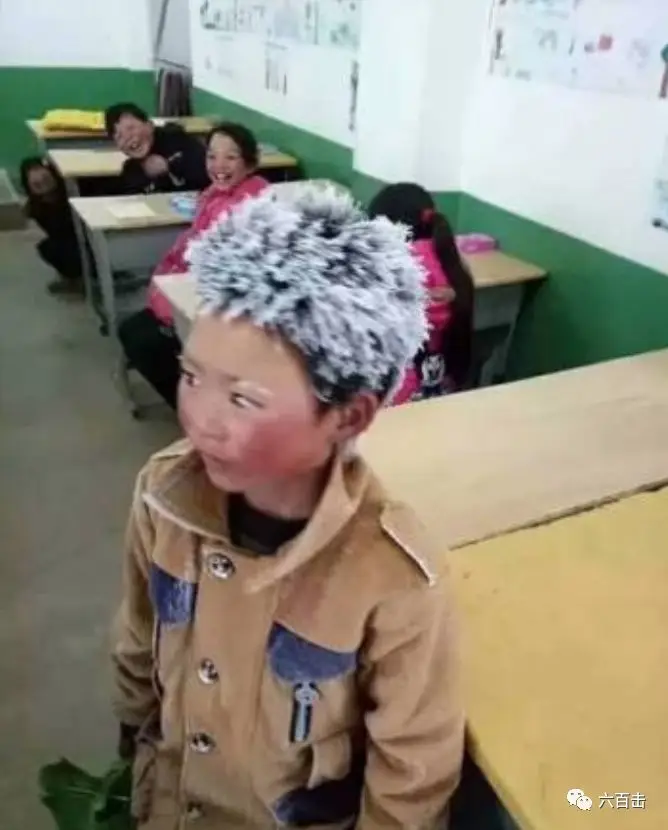
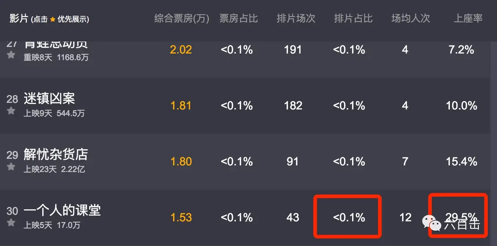
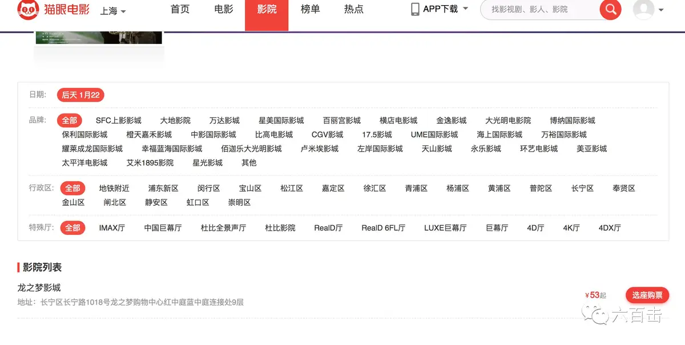
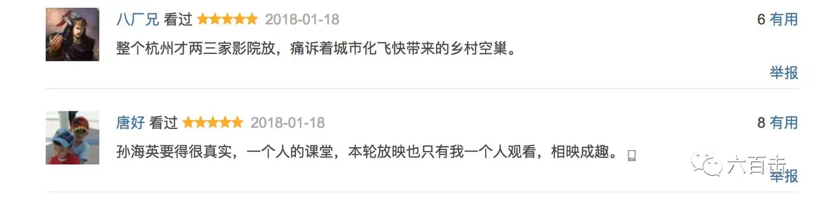
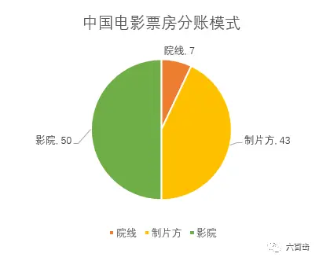
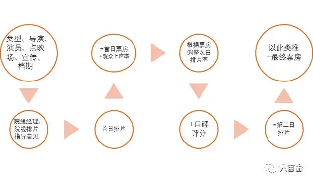
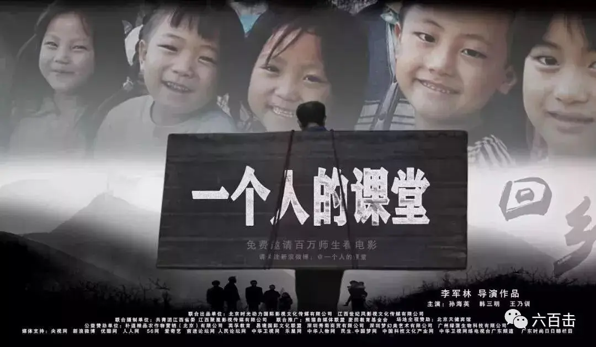

id="js_content" style="">文化是累积的、自然发生的，任何东西你让它快速发展的话，结果都是畸形的、不健康的，都会变成一个抢钱的局面。(不同类型的电影)都有一个管道，都能找到它的观众，这样均衡的发展才是比较健康的。偏门种是不太好的，不管是偏艺术还是偏商业都不是很健康
——李安
前几天，一张云南昭通“冰花男孩”的照片牵动了无数人的心，也让我们窥见了留守儿童所面对的“冰冷”和艰难。

一时间，“冰花男孩”引起了全社会对于留守儿童的关心，但是这份温暖和关注在资本和利润面前却是那么的无力和软弱。
由孙海英主演的国内第一部倡导全民公益、深刻表现留守儿童与留守老师的诚意之作《一个人的课堂》排片率不足0.1%。

数据来自于猫眼实时票房
这是什么概念？
假如你在上海，最近两天，在上海三百来家电影院中，只有一家电影院会上映本片，而且只有一场，电影随时可能面临下线。

但是与超低排片率形成强烈对比的是电影超高的口碑。

该片也获得第49届休斯顿国际电影节最佳外语片奖，获得崔永元等一百多位社会名人大力推荐。
可是这么好的电影何以鲜有机会与观众见面？影院在追逐利润最大化的同时，是否剥夺了观众选择的权利，是否完全丢弃了社会责任。
现在国内的电影票房分账模式是：电影局电影专项基金5%，营业税3.3%，剩余的部分影院、院线、制片发行方再进行分账，院线分7%，影院分50%，制片发行方分43%。

图片来自网络
在影片的放映上，影院有绝对的话语权，而排片是影院的核心竞争力，将直接影响观影人数、票房、食品酒水、衍生品、广告场租。
最初，影院会按照市场规律来进行排片，比如有大明星、大导演那么先期的排片率可能会高，但是最终排片率是一个动态的过程，会按照上座率而进行动态调整，不过调整的决定权依然掌握在院线经理手中。
所以陈可辛就曾表示，电影是拍给院线经理看的：
我们要想怎么征服戏院经理，戏院经理对你有信心，你的电影就已经卖钱了
即使排片会受到电影类型、导演、演员、点映表现等多种因素影响，但是排片有很大的主观性，这里面的水也非常深。

图片来自网络
排片率并不一定与口碑成正比，不仅仅《一个人的课堂》受到冷待，此前的高分电影《钢的琴》一天也只排一场，最终票房只有500万。
而讽刺的是，之前的《富春山居图》口碑烂出新天地，但是在放映的前两周，该片排片率以压倒性优势位居排片榜首，徘徊在30%左右，是排第二位的好莱坞大片《星际迷航》的两倍多。
后面无力吐槽的《小时代》再次以“史无前例”的高排片量冲击观众眼球，最高日排片达53%，占据全国影院一半以上的场次，甚至有部分影院出现了100%全排的局面。
陈可辛也无奈地说，在内地，有些电影是不用看口碑的。
上片那天，多少戏院排你，你已经赢了
因此，不公平的排片会剥夺观众选择的权利，也会扼杀电影的多样性，挤占其他电影的放映空间，这无疑是不合理的。

《一个人的课堂》没有大制作、名导、大牌演员、成熟的商业运作，更没有较为强势的发行方，能够上映已是不容易，但是中国的电影要继续前进，则需要控制大片垄断的局面，推进院线朝着多元化的方向发展。
我们已经被电影中的大制作、鸡汤灌的丧失了分辨力和知觉，已经吃不下粗茶淡饭，现在我们缺的不是鸡汤，而是像《一个人的课堂》这样直面社会问题的佳作。
电影背后的留守儿童问题、农名工进城务工问题、扭曲的教育体制、悬殊的贫富差距，这些都是我们社会“血淋淋”的问题。
很可惜的是，我们没有去探讨和反应这些社会问题的成熟电影，不管我们的制作将来多么进步，甚至水平超越好莱坞，如果丧失了良知和面对真实的嗅觉，我们一样是失败，我们没有像韩国那样改变社会的电影，我们的电影“穷”的就只剩下钱了。
所以我们应该珍惜《一个人的课堂》，应该通过这部筹备四年的诚意之作去更深地了解留守儿童教育问题。
否则，我们对无数个“冰雪男孩”的关心，也就只能够停止在转发朋友圈上，因为我们根本不了解也没有途经去更深地理解他们的苦难和坚持。
从这一点来看，《一个人的课堂》应该拥有更多的排片，资本在追逐利润的同时应当兼顾一定的社会责任。
导演贾樟柯就在自己的微博中介绍法国的经验：
法国规定一部影片在任何一个影院的排厅量不能超过三分之一，也不能超过该电影院总场次的三分之一
贾樟柯引用法国文化部长菲莉佩蒂的话说：
这是出于保护文化多样性的考虑做出的硬性规定。
市场经济不等于没有约束，不等于经营者可以不承担任何社会责任，没有约束的市场经济是欠完善的市场经济。
对于我们来说，可就不仅仅是保护文化的多样性了，而是要保护好电影的“良心”。
否则，媒体和电影会塑造出一帮冷漠的人，而这帮冷漠的人又会培育出大量“金光闪闪”的烂片，留守儿童依旧只能活在冰冷中。
因为没有人真正关心他们，也没有途经可以了解他们，留守儿童只会沦为家长去教育自己孩子的鸡汤，那将是何等的虚伪和冷漠。
相关推荐：
100双绝望的眼睛
《芳华》| 他那么好却被伤的如此之深
《潜行者》 | 这是全人类绝无仅有的电影了
《乡愁》 | 没有一个人能够将信仰拍的如此诗意和凝重
这部由罗伯特·德尼罗主演的宣教士电影，同时收获了奥斯卡和金棕榈大奖
这里没有挑逗你眼目情欲的小鲜肉
也没有挑动你肉体情欲的段子
更没有膨胀你今生骄傲的鸡血
我们只在乎那些最质朴真诚的作品
在那里我们才能恢复真正的想象力
我们也坚信这才是我们真正需要的

ID:Six_hundred_hits
长按二维码，一键关注
【六百击】
-END-
电影评论
尽情分享朋友圈

苹果打赏通道